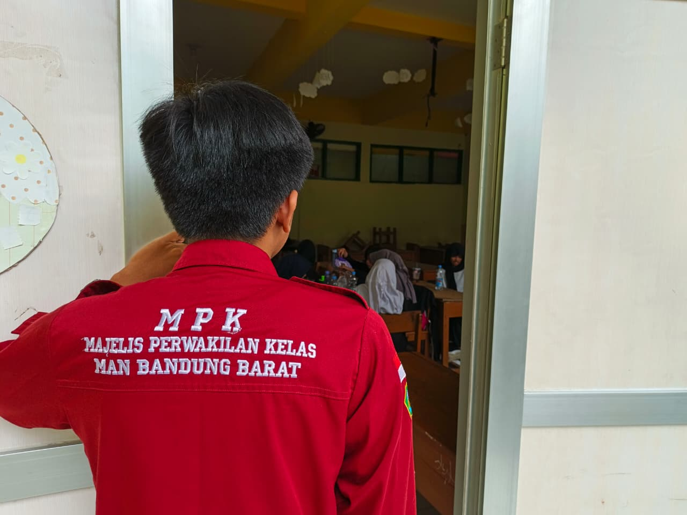
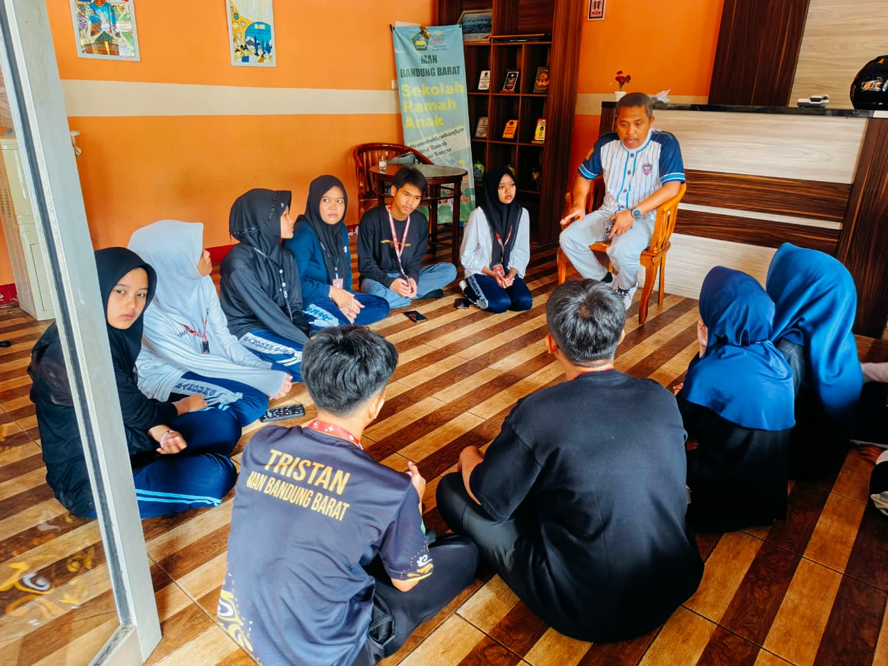

Galeri Kegiatan

Menjaga Gerbang Masuk Madrasah
Memantau kedatangan siswa dalam berpakaian serta kelengkapan berkendara.

Menyisir Setiap Kelas Saat Upacara Bendera akan Dimulai
Meningkatkan kesadaran dan kemandirian siswa dalam mendisiplinkan diri untuk mengikuti upacara.

Mengevaluasi OSIM dan ESKUL
Meningkatkan kinerja dan penyusunan program kerja OSIM dan ESKUL untuk waktu yang akan mendatang